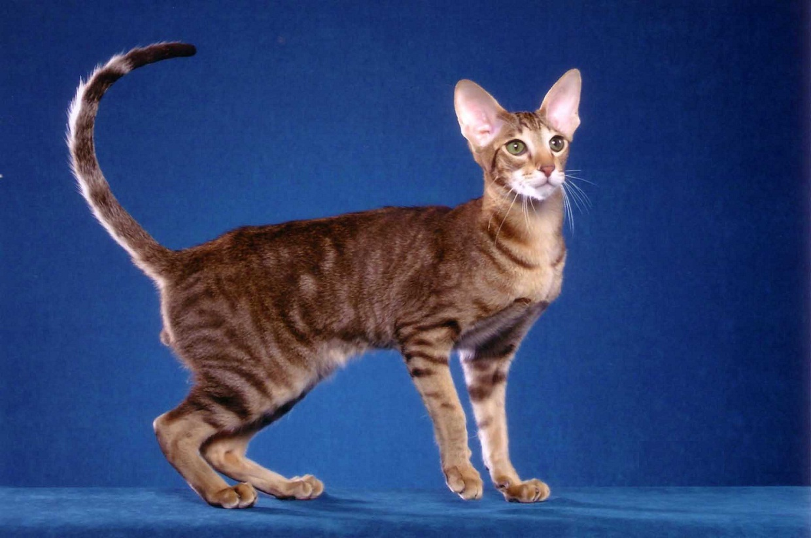

Приветствую!
На этой странице я расскажу вам об одной из пород кошек.
Ориентальные кошки.
Ориенталы относятся к сиамо-ориентальной группе,
наряду с сиамскими кошками, их также называют “восточники”,
“азиаты” или просто “ори”.
Восточники являются одной из самых красочных пород в мире кошек.
Вариативность окрасов ори достигает трехсот сочетаний.

Основные черты характера:
- Игривые,
- Умные,
- Дружелюбные,
- Впечатляюще спортивные,
- Очень общительные)
Отличительные черты внешности:
- Стройные длинные ноги с аккуратными лапками.
- Широкие ушки закругленной формы. Котята напоминают забавных чебурашек.
- Изящная шея.
- Густая блестящая шерсть без подшерстка. Плотно прилегает к телу.
- Удлиненный носик.
Выбрать для себя такого котика можно по ссылке:
Питомник